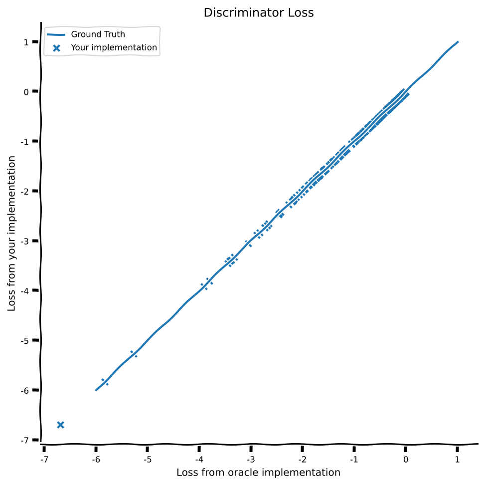
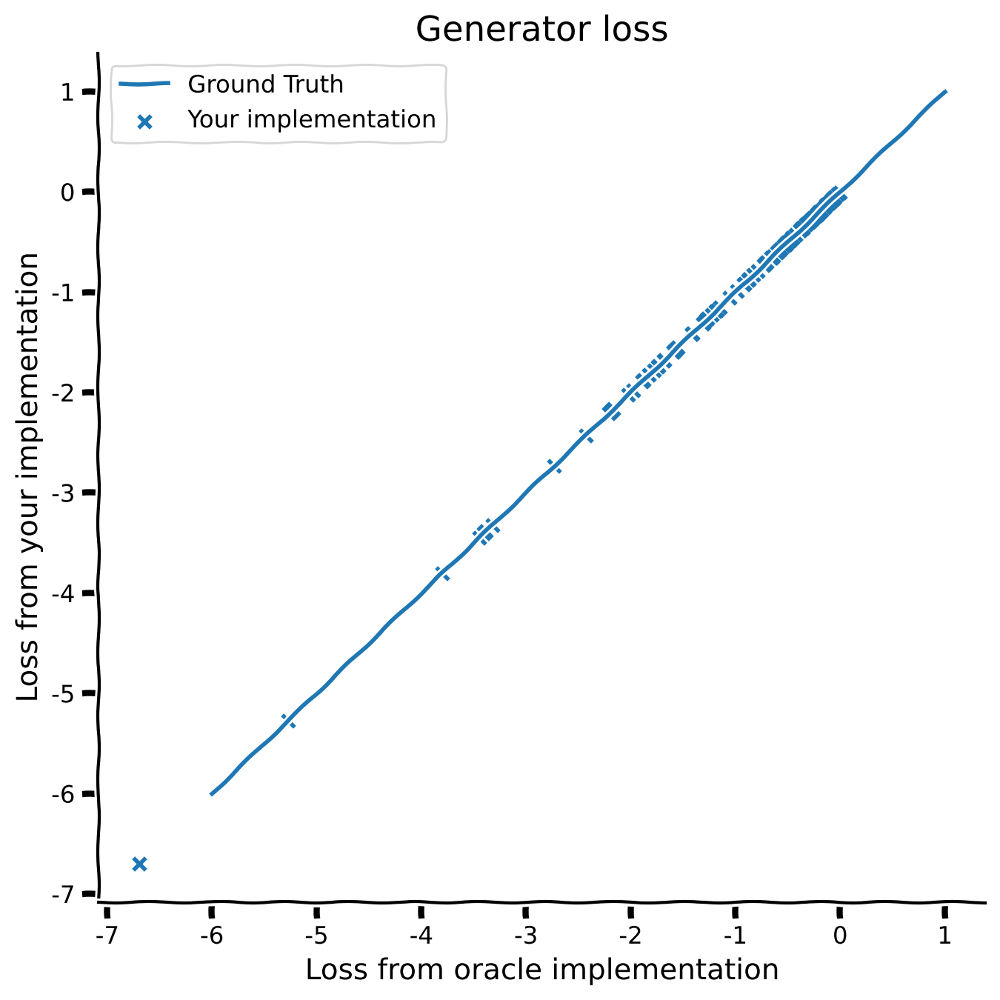

Tutorial 2: Introduction to GANs
Contents


Tutorial 2: Introduction to GANs¶
Week 2, Day 4: Generative Models
By Neuromatch Academy
Content creators: Kai Xu, Seungwook Han, Akash Srivastava
Content reviewers: Polina Turishcheva, Melvin Selim Atay, Hadi Vafaei, Deepak Raya, Charles J Edelson, Kelson Shilling-Scrivo
Content editors: Charles J Edelson, Kelson Shilling-Scrivo, Spiros Chavlis
Production editors: Arush Tagade, Gagana B, Spiros Chavlis
Our 2022 Sponsors, including Presenting Sponsor Facebook Reality Labs

Tutorial Objectives¶
The goal of this tutorial is two-fold; first you will be introduced to GANs training, and you will be able to understand how GANs are connected to other generative models that we have been before.
By the end of the first part of this tutorial you will be able to:
Understand, at a high level, how GANs are implemented.
Understand the training dynamics of GANs.
Know about a few failure modes of GAN training.
Understand density ratio estimation using a binary classifier
Understand the connection between GANs and other generative models.
Implement a GAN.
Setup¶
Install dependencies¶
# @title Install dependencies
!pip install git+https://github.com/NeuromatchAcademy/evaltools --quiet
from evaltools.airtable import AirtableForm
# Generate airtable form
atform = AirtableForm('appn7VdPRseSoMXEG','W2D5_T2','https://portal.neuromatchacademy.org/api/redirect/to/9c55f6cb-cdf9-4429-ac1c-ec44fe64c303')
# Imports
import torch
import numpy as np
import matplotlib.pyplot as plt
Figure settings¶
# @title Figure settings
import ipywidgets as widgets # Interactive display
%config InlineBackend.figure_format = 'retina'
plt.style.use("https://raw.githubusercontent.com/NeuromatchAcademy/content-creation/main/nma.mplstyle")
plt.rc('axes', unicode_minus=False)
Plotting functions¶
# @title Plotting functions
ld_true = [-7.0066e-01, -2.6368e-01, -2.4250e+00, -2.0247e+00, -1.1795e+00,
-4.5558e-01, -7.1316e-01, -1.0932e-01, -7.8608e-01, -4.5838e-01,
-1.0530e+00, -9.1201e-01, -3.8020e+00, -1.7787e+00, -1.2246e+00,
-6.5677e-01, -3.6001e-01, -2.2313e-01, -1.8262e+00, -1.2649e+00,
-3.8330e-01, -8.8619e-02, -9.2357e-01, -1.3450e-01, -8.6891e-01,
-5.9257e-01, -4.8415e-02, -3.3197e+00, -1.6862e+00, -9.8506e-01,
-1.1871e+00, -7.0422e-02, -1.7378e+00, -1.3099e+00, -1.8926e+00,
-3.4508e+00, -1.5696e+00, -7.2787e-02, -3.2420e-01, -2.9795e-01,
-6.4189e-01, -1.4120e+00, -5.3684e-01, -3.4066e+00, -1.9753e+00,
-1.4178e+00, -2.0399e-01, -2.3173e-01, -1.2792e+00, -7.2990e-01,
-1.9872e-01, -2.9378e-03, -3.5890e-01, -5.6643e-01, -1.8003e-01,
-1.5818e+00, -5.2227e-01, -2.1862e+00, -1.8743e+00, -1.4200e+00,
-3.1988e-01, -3.5513e-01, -1.5905e+00, -4.2916e-01, -2.5556e-01,
-8.2807e-01, -6.5568e-01, -4.8475e-01, -2.1049e-01, -2.0104e-02,
-2.1655e+00, -1.1496e+00, -3.6168e-01, -8.9624e-02, -6.7098e-02,
-6.0623e-02, -5.1165e-01, -2.7302e+00, -6.0514e-01, -1.6756e+00,
-3.3807e+00, -5.7368e-02, -1.2763e-01, -6.6959e+00, -5.2157e-01,
-8.7762e-01, -8.7295e-01, -1.3052e+00, -3.6777e-01, -1.5904e+00,
-3.8083e-01, -2.8388e-01, -1.5323e-01, -3.7549e-01, -5.2722e+00,
-1.7393e+00, -2.8814e-01, -5.0310e-01, -2.2077e+00, -1.5507e+00,
-6.8569e-01, -1.4620e+00, -9.2639e-02, -1.4160e-01, -3.6734e-01,
-1.0053e+00, -6.7353e-01, -2.2676e+00, -6.0812e-01, -1.0005e+00,
-4.2908e-01, -5.1369e-01, -2.2579e-02, -1.8496e-01, -3.4798e-01,
-7.3089e-01, -1.1962e+00, -1.6095e+00, -1.7558e-01, -3.3166e-01,
-1.1445e+00, -2.4674e+00, -5.0600e-01, -2.0727e+00, -5.4371e-01,
-8.0499e-01, -3.0521e+00, -3.6835e-02, -2.0485e-01, -4.6747e-01,
-3.6399e-01, -2.6883e+00, -1.9348e-01, -3.1448e-01, -1.6332e-01,
-3.2233e-02, -2.3336e-01, -2.6564e+00, -1.2841e+00, -1.3561e+00,
-7.4717e-01, -2.7926e-01, -8.7849e-01, -3.3715e-02, -1.4933e-01,
-2.7738e-01, -1.6899e+00, -1.5758e+00, -3.2608e-01, -6.5770e-01,
-1.7136e+00, -5.8316e+00, -1.1988e+00, -8.3828e-01, -1.8033e+00,
-2.3017e-01, -8.9936e-01, -1.1917e-01, -1.6659e-01, -2.7669e-01,
-1.2955e+00, -1.2076e+00, -2.2793e-01, -1.0528e+00, -1.4894e+00,
-5.7428e-01, -7.3208e-01, -9.5673e-01, -1.6617e+00, -3.9169e+00,
-1.2182e-01, -3.8092e-01, -1.1924e+00, -2.4566e+00, -2.7350e+00,
-2.8332e+00, -9.1506e-01, -6.7432e-02, -7.8965e-01, -2.0727e-01,
-3.4615e-02, -2.8868e+00, -2.1218e+00, -1.2368e-03, -9.0038e-01,
-5.3746e-01, -5.4080e-01, -3.1625e-01, -1.1786e+00, -2.2797e-01,
-1.1498e+00, -1.3978e+00, -1.9515e+00, -1.1614e+00, -5.1456e-03,
-1.9316e-01, -1.3849e+00, -9.2799e-01, -1.1649e-01, -2.3837e-01]
def plotting_ld(ld, true=ld_true):
"""
Helper function to plot discriminator loss from user
implementation and oracle implementation
Args:
ld: list
Log of loss from user implementation
true: list
Log of loss from oracle implementation
Returns:
Nothing
"""
fig, ax = plt.subplots(figsize=(7, 7))
ax.plot([-6, 1], [-6, 1], label="Ground Truth")
ax.scatter(true, ld, marker="x",
label="Your implementation")
ax.set_xlabel("Loss from oracle implementation")
ax.set_ylabel("Loss from your implementation")
ax.legend()
ax.set_title("Discriminator Loss")
lg_true = [-7.0066e-01, -2.6368e-01, -2.4250e+00, -2.0247e+00, -1.1795e+00,
-4.5558e-01, -7.1316e-01, -1.0932e-01, -7.8608e-01, -4.5838e-01,
-1.0530e+00, -9.1201e-01, -3.8020e+00, -1.7787e+00, -1.2246e+00,
-6.5677e-01, -3.6001e-01, -2.2313e-01, -1.8262e+00, -1.2649e+00,
-3.8330e-01, -8.8619e-02, -9.2357e-01, -1.3450e-01, -8.6891e-01,
-5.9257e-01, -4.8415e-02, -3.3197e+00, -1.6862e+00, -9.8506e-01,
-1.1871e+00, -7.0422e-02, -1.7378e+00, -1.3099e+00, -1.8926e+00,
-3.4508e+00, -1.5696e+00, -7.2787e-02, -3.2420e-01, -2.9795e-01,
-6.4189e-01, -1.4120e+00, -5.3684e-01, -3.4066e+00, -1.9753e+00,
-1.4178e+00, -2.0399e-01, -2.3173e-01, -1.2792e+00, -7.2990e-01,
-1.9872e-01, -2.9378e-03, -3.5890e-01, -5.6643e-01, -1.8003e-01,
-1.5818e+00, -5.2227e-01, -2.1862e+00, -1.8743e+00, -1.4200e+00,
-3.1988e-01, -3.5513e-01, -1.5905e+00, -4.2916e-01, -2.5556e-01,
-8.2807e-01, -6.5568e-01, -4.8475e-01, -2.1049e-01, -2.0104e-02,
-2.1655e+00, -1.1496e+00, -3.6168e-01, -8.9624e-02, -6.7098e-02,
-6.0623e-02, -5.1165e-01, -2.7302e+00, -6.0514e-01, -1.6756e+00,
-3.3807e+00, -5.7368e-02, -1.2763e-01, -6.6959e+00, -5.2157e-01,
-8.7762e-01, -8.7295e-01, -1.3052e+00, -3.6777e-01, -1.5904e+00,
-3.8083e-01, -2.8388e-01, -1.5323e-01, -3.7549e-01, -5.2722e+00,
-1.7393e+00, -2.8814e-01, -5.0310e-01, -2.2077e+00, -1.5507e+00]
def plotting_lg(lg, true=lg_true):
"""
Helper function to plot generator loss from user
implementation and oracle implementation
Args:
ld: list
Log of loss from user implementation
true: list
Log of loss from oracle implementation
Returns:
Nothing
"""
fig, ax = plt.subplots(figsize=(7, 7))
ax.plot([-6, 1], [-6, 1], label="Ground Truth")
ax.scatter(true, lg, marker="x",
label="Your implementation")
ax.set_xlabel("Loss from oracle implementation")
ax.set_ylabel("Loss from your implementation")
ax.legend()
ax.set_title("Generator loss")
Set random seed¶
Executing set_seed(seed=seed) you are setting the seed
# @title Set random seed
# @markdown Executing `set_seed(seed=seed)` you are setting the seed
# For DL its critical to set the random seed so that students can have a
# baseline to compare their results to expected results.
# Read more here: https://pytorch.org/docs/stable/notes/randomness.html
# Call `set_seed` function in the exercises to ensure reproducibility.
import random
import torch
def set_seed(seed=None, seed_torch=True):
"""
Function that controls randomness. NumPy and random modules must be imported.
Args:
seed : Integer
A non-negative integer that defines the random state. Default is `None`.
seed_torch : Boolean
If `True` sets the random seed for pytorch tensors, so pytorch module
must be imported. Default is `True`.
Returns:
Nothing.
"""
if seed is None:
seed = np.random.choice(2 ** 32)
random.seed(seed)
np.random.seed(seed)
if seed_torch:
torch.manual_seed(seed)
torch.cuda.manual_seed_all(seed)
torch.cuda.manual_seed(seed)
torch.backends.cudnn.benchmark = False
torch.backends.cudnn.deterministic = True
print(f'Random seed {seed} has been set.')
# In case that `DataLoader` is used
def seed_worker(worker_id):
"""
DataLoader will reseed workers following randomness in
multi-process data loading algorithm.
Args:
worker_id: integer
ID of subprocess to seed. 0 means that
the data will be loaded in the main process
Refer: https://pytorch.org/docs/stable/data.html#data-loading-randomness for more details
Returns:
Nothing
"""
worker_seed = torch.initial_seed() % 2**32
np.random.seed(worker_seed)
random.seed(worker_seed)
Set device (GPU or CPU). Execute set_device()¶
# @title Set device (GPU or CPU). Execute `set_device()`
# especially if torch modules used.
# Inform the user if the notebook uses GPU or CPU.
def set_device():
"""
Set the device. CUDA if available, CPU otherwise
Args:
None
Returns:
Nothing
"""
device = "cuda" if torch.cuda.is_available() else "cpu"
if device != "cuda":
print("WARNING: For this notebook to perform best, "
"if possible, in the menu under `Runtime` -> "
"`Change runtime type.` select `GPU` ")
else:
print("GPU is enabled in this notebook.")
return device
SEED = 2021
set_seed(seed=SEED)
DEVICE = set_device()
Random seed 2021 has been set.
WARNING: For this notebook to perform best, if possible, in the menu under `Runtime` -> `Change runtime type.` select `GPU`
Section 1: How to train GANs¶
Time estimate: ~15mins
Video 1: Generative Adversarial Networks¶
GANs consist two networks: A critic or discriminator (disc) and a generator (gen) that are trained by alternating between the following two steps:
In step 1, we update the parameters (
disc.params) of the discriminator by backpropagating through the discriminator loss (BCE loss)disc.loss.In step 2, we update the parameters (
gen.params) of the generator by backpropagating through the generator loss,gen.loss(-1 * BCE loss).
We will now implement a simple GAN training loop!
Coding Exercise 1: The GAN training loop¶
To get you started we have implemented a simple GAN in pseudocode. All you have to do is to implement the training loop.
Your goal is to arrange the functions given below in the correct order in the train_gan_iter function
disc.loss(x_real, x_fake): Discriminator lossdisc.classify(x): Classifyxas real or fakegen.loss(x_fake, disc_fn): Generator lossdisc_fn(x)is a function to checkxis real or fake.gen.sample(num_samples): Generate samples from the generatorbackprop(loss, model): Compute gradient oflosswrtmodelmodelis eitherdiscorgen
We have already taken care of most of these functions. So you only have to figure out the placement of disc.loss and gen.loss functions.
We highly recommend studying train_gan_iter function to understand how the GAN training loop is structured.
Execute this cell to enable helper functions
# @markdown *Execute this cell to enable helper functions*
def get_data():
return "get_data"
class Disc:
"""
Disciminator class
"""
def loss(self, x_real, x_fake):
assert x_real == "get_data" and x_fake == "gen.sample", "Inputs to disc.loss is wrong"
def classify(self, x):
return "disc.classify"
class Gen:
"""
Generator class
"""
def loss(self, x_fake, disc_fn):
assert x_fake == "gen.sample" and disc_fn(None) == "disc.classify", "Inputs to gen.loss is wrong"
def sample(self, num_samples):
return "gen.sample"
def backprop(loss, model):
pass
def update(model, grad):
pass
def train_gan_iter(data, disc, gen):
"""
Update the discriminator (`disc`) and the generator (`gen`) using `data`
Args:
data: ndarray
An array of shape (N,) that contains the data
disc: Disc
The discriminator
gen: Gen
The generator
Returns:
None
"""
#################################################
# Intructions for students: #
# Fill out ... in the function and remove below #
#################################################
# Number of samples in the data batch
num_samples = 200
# The data is the real samples
x_real = data
## Discriminator training
# Ask the generator to generate some fake samples
x_fake = gen.sample(num_samples)
#################################################
## TODO for students: details of what they should do ##
# Fill out function and remove
raise NotImplementedError("Student exercise: Write code to compute disc_loss")
#################################################
# Compute the discriminator loss
disc_loss = ...
# Compute the gradient for discriminator
disc_grad = backprop(disc_loss, disc)
# Update the discriminator
update(disc, disc_grad)
## Generator training
# Ask the generator to generate some fake samples
x_fake = gen.sample(num_samples)
#################################################
## TODO for students: details of what they should do ##
# Fill out function and remove
raise NotImplementedError("Student exercise: Write code to compute gen_loss")
#################################################
# Compute the generator loss
gen_loss = ...
# Compute the gradient for generator
gen_grad = backprop(gen_loss, gen)
# Update the generator
update(gen, gen_grad)
print("Your implementation passes the check!")
return None
# Add event to airtable
atform.add_event('Coding Exercise 1: The GAN training loop')
data = get_data()
disc = Disc()
gen = Gen()
## Uncomment below to check your function
# train_gan_iter(data, disc, gen)
# to_remove solution
def train_gan_iter(data, disc, gen):
"""
Update the discriminator (`disc`) and the generator (`gen`) using `data`
Args:
data: ndarray
An array of shape (N,) that contains the data
disc: Disc
The discriminator
gen: Gen
The generator
Returns:
None
"""
# Number of samples in the data batch
num_samples = 200
# The data is the real samples
x_real = data
## Discriminator training
# Ask the generator to generate some fake samples
x_fake = gen.sample(num_samples)
# Compute the discriminator loss
disc_loss = disc.loss(x_real, x_fake)
# Compute the gradient for discriminator
disc_grad = backprop(disc_loss, disc)
# Update the discriminator
update(disc, disc_grad)
## Generator training
# Ask the generator to generate some fake samples
x_fake = gen.sample(num_samples)
# Compute the generator loss
gen_loss = gen.loss(x_fake, disc.classify)
# Compute the gradient for generator
gen_grad = backprop(gen_loss, gen)
# Update the generator
update(gen, gen_grad)
print("Your implementation passes the check!")
return None
# Add event to airtable
atform.add_event('Coding Exercise 1: The GAN training loop')
data = get_data()
disc = Disc()
gen = Gen()
## Uncomment below to check your function
train_gan_iter(data, disc, gen)
Your implementation passes the check!
Section 2: GAN Training Objective¶
Time estimate: ~20mins
The training objective of GANs consists of the losses for generators and discriminators respectively. In this section we will be implementing these objectives.
Video 2: Principles of GANs¶
Section 2.1: Discriminator Loss¶
The critic or the discriminator in a vanilla GAN is trained as a binary classifier using the BCE (Binary Cross Entropy) criteria. In this section, we will implement the training objective for the discriminator.
Here, \(p\) is the data distribution and \(q\) is the generator distribution. \(D_\omega\) is the logit, which represents \(\log \frac{p}{q}\). \(\sigma\) is the sigmoid function and therfore, \(\sigma(D_\omega)\) represents \(\frac{p}{p+q}\).
Coding Exercise 2.1: Implement Discriminator Loss¶
To get you started we have implemented a simple GAN in pseudocode and partially implemented the discriminator training objective.
Your goal is to complete the missing part in the training objective of the discriminator in the function loss_disc.
loss_disc also allows you evaluate the loss function on some random samples.
If your implementation is correct, you will see a plot where the loss values from your implementation will match the ground truth loss values.
In practice, given \(N\) samples, we estimate BCE as
Here, \(y\) is the label. \(y=1\) when \(x \sim p\) (real data) and \(y=0\) when \(x \sim q\) (i.e., fake data).
Please note, disc.classify = \(\sigma(D_\omega)\) in loss_disc.
Execute this cell to enable helper functions
# @markdown *Execute this cell to enable helper functions*
def get_data(num_samples=100, seed=0):
set_seed(seed)
return torch.randn([num_samples, 1])
class DummyGen:
"""
Dummy Generator
"""
def sample(self, num_samples=100, seed=1):
set_seed(seed)
return torch.randn([num_samples, 1]) + 2
class DummyDisc:
"""
Dummy Discriminator
"""
def classify(self, x, seed=0):
set_seed(seed)
return torch.rand([x.shape[0], ])
def loss_disc(disc, x_real, x_fake):
"""
Compute the discriminator loss for `x_real` and `x_fake` given `disc`
Args:
disc: Disc
The discriminator
x_real: ndarray
An array of shape (N,) that contains the real samples
x_fake: ndarray
An array of shape (N,) that contains the fake samples
Returns:
ndarray with log of the discriminator loss
"""
label_real = 1
#################################################
# TODO for students: Loss for real data
raise NotImplementedError("Student exercise: Implement loss for real samples")
#################################################
loss_real = label_real * ...
label_fake = 0
#################################################
# TODO for students: Loss for fake data
raise NotImplementedError("Student exercise: Implement loss for fake samples")
#################################################
loss_fake = ... * torch.log(1 - disc.classify(x_fake))
return torch.cat([loss_real, loss_fake])
# Add event to airtable
atform.add_event('Coding Exercise 2.1: Implement Discriminator Loss')
disc = DummyDisc()
gen = DummyGen()
x_real = get_data()
x_fake = gen.sample()
## Uncomment to check your function
# ld = loss_disc(disc, x_real, x_fake)
# plotting_ld(ld)
# to_remove solution
def loss_disc(disc, x_real, x_fake):
"""
Compute the discriminator loss for `x_real` and `x_fake` given `disc`
Args:
disc: Disc
The discriminator
x_real: ndarray
An array of shape (N,) that contains the real samples
x_fake: ndarray
An array of shape (N,) that contains the fake samples
Returns:
ndarray with log of the discriminator loss
"""
# Loss for real data
label_real = 1
loss_real = label_real * torch.log(disc.classify(x_real))
# Loss for fake data
label_fake = 0
loss_fake = (1 - label_fake) * torch.log(1 - disc.classify(x_fake))
return torch.cat([loss_real, loss_fake])
# Add event to airtable
atform.add_event('Coding Exercise 2.1: Implement Discriminator Loss')
disc = DummyDisc()
gen = DummyGen()
x_real = get_data()
x_fake = gen.sample()
## Uncomment to check your function
ld = loss_disc(disc, x_real, x_fake)
with plt.xkcd():
plotting_ld(ld)
Random seed 0 has been set.
Random seed 1 has been set.
Random seed 0 has been set.
Random seed 0 has been set.

A note on numerical stability
It is common that functions like \(\log\) throw a numerical error.
For \(\log\), it happens when \(x\) in \(\log(x)\) is very close to 0.
The most common practice is to always add some very small value \(\epsilon\) to \(x\), i.e. use \(\log(x + \epsilon)\) instead.
Most built-in functions in modern DL frameworks like TensorFlow or PyTorch handle such things in their built-in loss already, e.g., torch.nn.BCE, which is equivalent to the loss you implemented above.
Section 2.3: The generator loss¶
Now that we have a trained critic, lets see how to train the generator using it.
Coding Exercise 2.3: The generator loss¶
We will now implement the generator loss function and evaluate it on some fixed points.
Your goal is to complete the implementation of the function loss_gen using the optimal critic from above.
Upon correct implementation, you shall see a plot where the loss values from generator samples align with the “Correct” values.
HINT: You simply need to change the labels.
def loss_gen(disc, x_fake):
"""
Compute the generator loss for `x_fake` given `disc`
Args:
disc: Disc
The generator
x_fake: ndarray
An array of shape (N,) that contains the fake samples
Returns:
loss_fake: ndarray
The generator loss
"""
#################################################
# TODO for students: Loss for fake data
raise NotImplementedError("Student exercise: Implement loss for fake data")
#################################################
label_fake = ...
loss_fake = label_fake * ...
return loss_fake
# Add event to airtable
atform.add_event('Coding Exercise 2.3: The generator loss')
disc = DummyDisc()
gen = DummyGen()
x_fake = gen.sample()
## Uncomment below to check your function
# lg = loss_gen(disc, x_fake)
# plotting_lg(lg)
# to_remove solution
def loss_gen(disc, x_fake):
"""
Compute the generator loss for `x_fake` given `disc`
Args:
disc: Disc
The generator
x_fake: ndarray
An array of shape (N,) that contains the fake samples
Returns:
loss_fake: ndarray
The generator loss
"""
# Loss for fake data
label_fake = 1
loss_fake = label_fake * torch.log(disc.classify(x_fake))
return loss_fake
# Add event to airtable
atform.add_event('Coding Exercise 2.3: The generator loss')
disc = DummyDisc()
gen = DummyGen()
x_fake = gen.sample()
## Uncomment below to check your function
lg = loss_gen(disc, x_fake)
with plt.xkcd():
plotting_lg(lg)
Random seed 1 has been set.
Random seed 0 has been set.

Did you notice?
The loss you implemented for generator is essentially the part for real data in loss_disc, i.e., it is saying, “the data I am feeding to you is real and not fake”.
Section 3: The difficulty of GAN training.¶
Time estimate: ~10mins
In this section we will develop an intuition for the training dynamics of GANs.
Interactive Demo 2: Failure modes of GAN training¶
GAN training is notoriously difficult because it is very sensitive to hyper-parameters such as learning rate and model architecture. To help you develop a sense of this here is a very simple GAN training demo that we have borrowed from Andrej Karpathy’s website.
The generator \(G\), pictured in red, takes inputs sampled from a uniform distribution, \(z\). It attempts to transform these to match a data distribution, shown below in blue. Meanwhile, the discriminator \(D\) attempts to determine whether a sample is from the data distribution or the generating distribution. In the demo, the green curve represents the output of the discriminator. Its value is high where the discriminator is more confident that a sample with that value is drawn from the data distribution.
Even though the GAN in this demo is very simple and operates in either 1D or 2D spaces, it is however very sensitive to the learning rate. Try it for yourself!
Video 3: GAN generator Learning Idea¶
Think! 2: What makes GANs hard to train?¶
You have played with the demo and it’s time to think about a few questions
Which target is more stable to train, 1D or 2D?
If you keep increasing the learning rate, what happens? Does it happen in both the cases, i.e., 1D/2D targets?
Can you think of some drawbacks of using small learning rates?
Student Response¶
# @title Student Response
from ipywidgets import widgets
text=widgets.Textarea(
value='Type your answer here and click on `Submit!`',
placeholder='Type something',
description='',
disabled=False
)
button = widgets.Button(description="Submit!")
display(text,button)
def on_button_clicked(b):
atform.add_answer('q1', text.value)
print("Submission successful!")
button.on_click(on_button_clicked)
# to_remove explanation
"""
1. 2D as it is simply a more difficult distribution to model compared to the
unimodal 1D example.
2. The training becomes unstable and eventually diverges. Yes.
3. Training is too slow and takes longer to converge.
In general, when training a GAN, we need to ensure a certain balance between
the critic and generator training. As such, tuning the learning rate
is crucial for succesfully training GANs.
""";
Video 4: GAN Failure Models¶
Section 4: GAN training in action!¶
Time estimate: ~4mins
In this section we will be playing with a complete implementation of GAN.
Summary¶
Through this tutorial, we have learned
How to implement the training loop of GANs.
Developed an intuition about the training dynamics of GANs.
How to implement the training objectives for the generator and discriminator of GANs.
How are GANs connected to density ratio estimation.
Next tutorial will cover conditional GANs and ethical issues of DL.
Airtable Submission Link¶
# @title Airtable Submission Link
from IPython import display as IPydisplay
IPydisplay.HTML(
f"""
<div>
<a href= "{atform.url()}" target="_blank">
<img src="https://github.com/NeuromatchAcademy/course-content-dl/blob/main/tutorials/static/AirtableSubmissionButton.png?raw=1"
alt="button link to Airtable" style="width:410px"></a>
</div>""" )